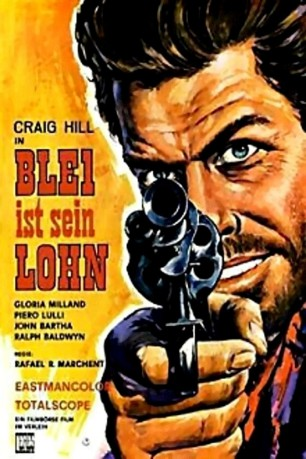
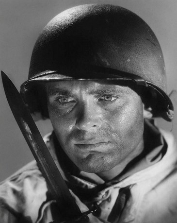

#9597 Blei ist sein Lohn
Alternativ: Hands of a Gunfighter (Englischer Titel)
 
 IMDB-Wertung: 5.8 / 10
IMDB-Wertung: 5.8 / 10  Metascore: 0
Metascore: 0 
Für den ehemaligen Revolverhelden Dan Murphy (Craig Hill) hat das ehrbare Leben mit Frau und Kind ein Ende, als er von Sheriff Ford erkannt und gestellt wird - eine Konfrontation, die Murphys Sohn mit dem Leben bezahlt. Als Dan im Gegenzug das Kind seines Widersachers entführt, um seinen Traum von Familie ein weiteres Mal wahr werden zu lassen, kommt es zur Katastrophe: Konfrontiert mit den mörderischen Castle-Brüdern und einem Häscher des Sheriffs muss Murphy erneut zur Waffe greifen, um im finalen Duell dem Mörder seines Sohnes gegenüberzutreten...
Jahr: 1965
Dauer: 76 Minuten
FSK: 16
Land: Spanien Studio: Ceres-FilmverleihTonspuren:
Untertitel:
Auflösung: 1080p (1920x816) Größe: 5591 MB
Genre: Western
Regisseur: Rafael Romero Marchent
Drehbuch: Joaquín Romero Hernández
Soundtrack: Angelo Francesco Lavagnino
Darsteller:
-  Craig Hill als Dan Murphy
- Carlos Romero Marchent als Pat Davis
- Jesús Puente als Sheriff Roger
- Hugo Blanco als Charlie Castle
- Luis Induni als Capataz de Castle
 Rufino Inglés als Tendero
Rufino Inglés als Tendero- Jesús Guzmán als Juez
- José Guardiola als Johnny Castle
- Gloria Milland als Miriam Murphy
- Conchita Núñez als Margaret Dixon
- Piero Lulli als Davy Castle
- Francisco Sanz als Alex Dixon
- Raf Baldassarre als Mack
- Lorenzo Robledo als Slim Castle
- Goyo Lebrero als Borrachín
- Francisco José Huetos als Andy
- José Villasante als Henry
- John Bartha als Sheriff Fred
- Sultán als Custer
- Agustín Bescos als Barman (uncredited)
- Emilio Rodríguez als Ciudadano (uncredited)
Datei: X:\HD-Western-1960-1979\Blei ist sein Lohn (1965, FSK16, 1920x816).mkv seit 18.09.2018
Festplatte: HD Eastern+Western
 Es gibt insgesamt 110 Filme in der Gruppe 'HD-Western-1960-1979'
Es gibt insgesamt 110 Filme in der Gruppe 'HD-Western-1960-1979'